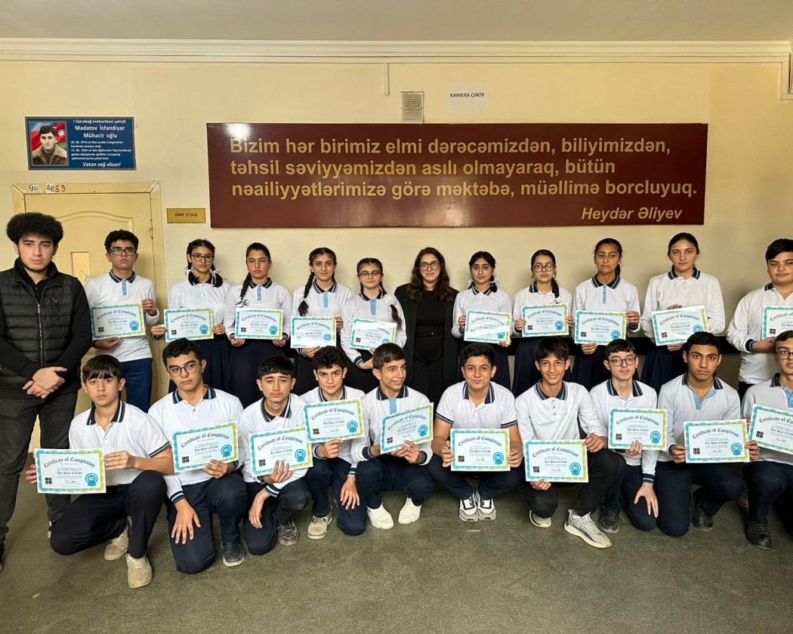

We organized a successful Hour of Code event at Mahammadli Village Secondary School in Absheron District on 5 November at 10:30AM till 11:30AM. We present about ADA university, the Hour of Code initiative, and algorithms to our 21 participants. We teach algorithms and coding to our participants who are very enthusiastic. They completed tasks successfully and improved their coding abilities. Overall, the Hour of Code event was a rewarding collaboration of education and entertainment.

Individual Contribution Table
| Team Member | Contribution to the project and report | Estimated % |
|---|---|---|
| Nargiz Safiyarli | Finding the school, giving the information about ADA University, algorithms and Hour of Code, answering the questions and preparing the report for Bonus 2 | 36% |
| Bahman Sariyev | Helping students to solve their problems with algorithms, an effective and short way for algorithms, recording videos and taking some photos, editing videos for Bonus 1 | 36% |
| Rafael Heybatzada | Recording videos and taking photos, helping students with their problems while solving tasks. | 20% |
| Davud Jabrayil-zada | Not contacting team members and not answering their messages and calls | 0% |